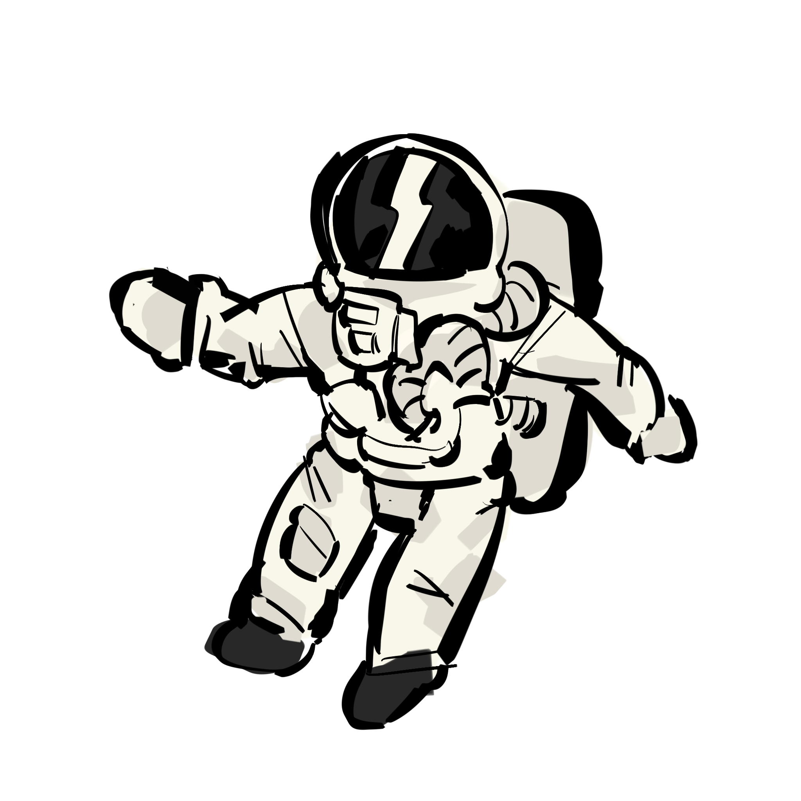
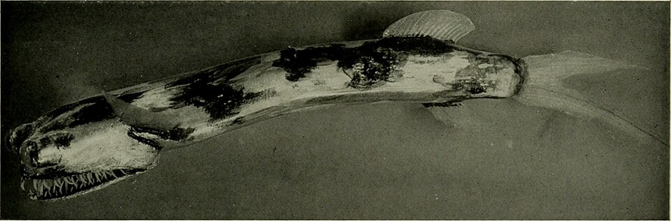
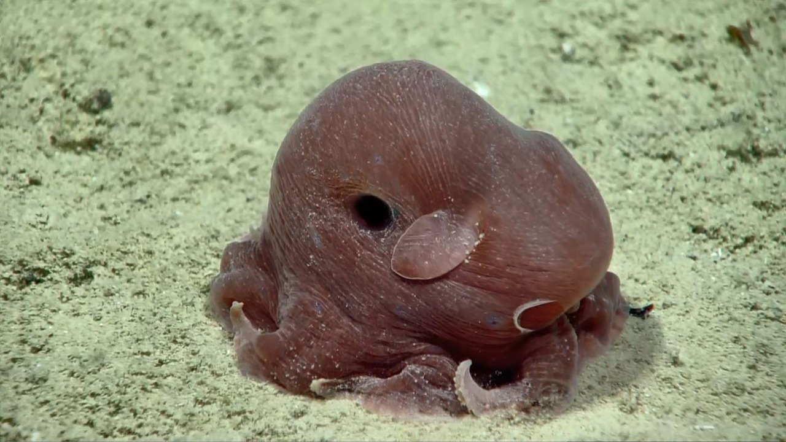
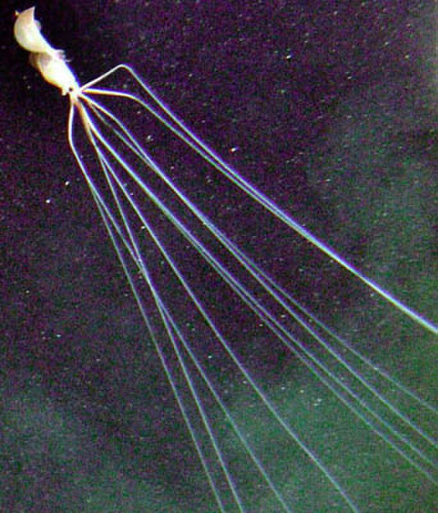

lysanne's corner
Ik heb de diepzee altijd erg facinerend gevonden, er is weinig over bekend en de dieren die hier leven, door de extreme omstandigheden zijn ze ook erg apart geevolueerd. Zelf vind ik het een beetje buitenaards.
Op deze site kan je de dieren die hier leven ontdekken door op ze te klikken.

de telescopefish
Deze engerds komen vooral voor in tropische wateren zo'n 200 tot 5000 meter diep. Ze hebben ook geen geslacht en hebben zowel mannelijke als vrouwelijke voortplantingsorganen. Door hun unieke kaak zonder normale botten kunnen ze prooi groter dan hun eigenichaam eten. Dit is voor een lege plaats als de diepzee wel heel handig.

De dumbooctopus
De dumbooctopus kan gevonden worden op de oceaanvloer, op een diepte van ongeveer 3000-4000m. Ze gebruiken hun oren om vooruit te komen. En het dieet van deze octopus bestaat uit oesters, slakken, wormen en schaaldieren die langs de oceeanvloer drijven. Om roofdieren te vermijden kunnen ze ook van kleur veranderen, maar gelukkig zijn er daar op de zeebodem niet veel van. Op hun zuignappen bevinden zich draadachtige structuren om zo beter hun prooien te kunnen vangen en naar hun mond kunnen brengen.

De bigfinsquid
Zoals veel diepzeedieren is er weinig over deze vissen bekend. Volgens het artikel Global distribution and depth of the Bigfin squid Magnapinna spp zijn er in totaal 46 waarnemingen van dit dier geweest. Met 19 van deze waarnemingen beschreven door wetenschappers. Gebaseerd op deze waarnemingen is er vastgesteld dat deze vissen tussen de 1578 en 6212 meter leven. Ze kunnen langer dan 6 meter lang worden, deze lengte bestaat vooral uit hun armen en tentakels. Volgens NOAA ocean exploration was de langst gespotte bigfin squid 6.4 meter lang met 6.1 meter die uit deze armen en tentakels bestonden. Wetenschappers hebben officieel 3 soorten bigfin squid gecategoriseerd.

De anglerfish
lalalalalala
De Phantom jellyfish
lalalalalala